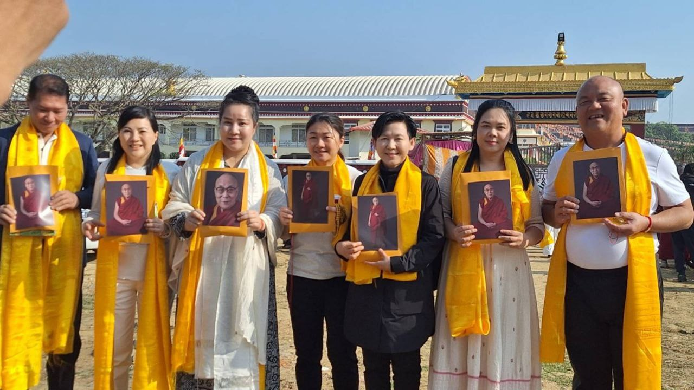
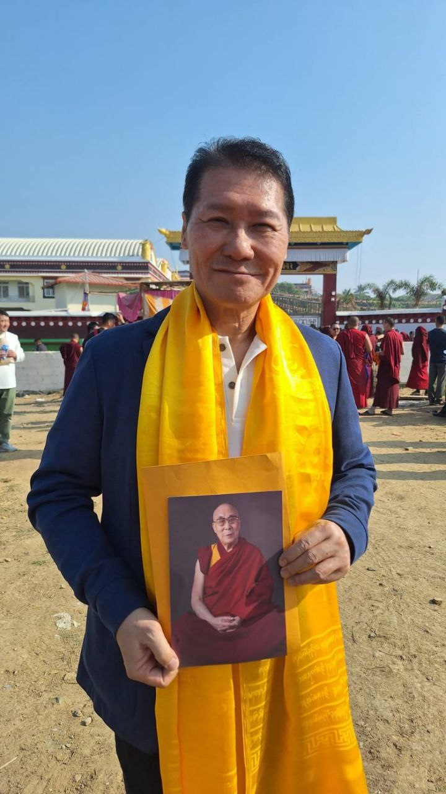
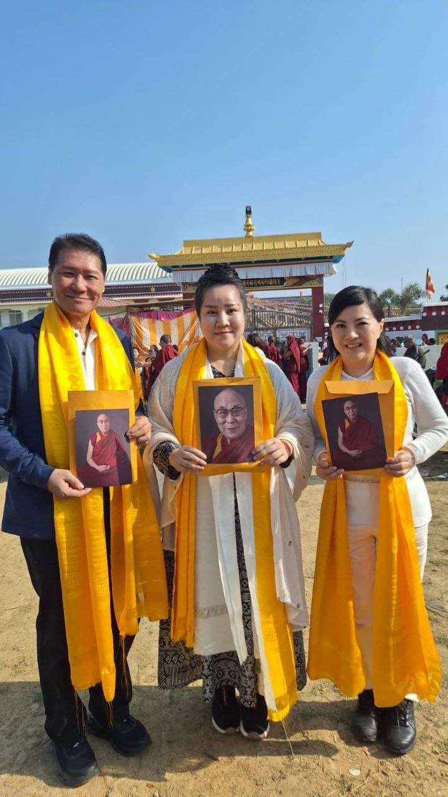
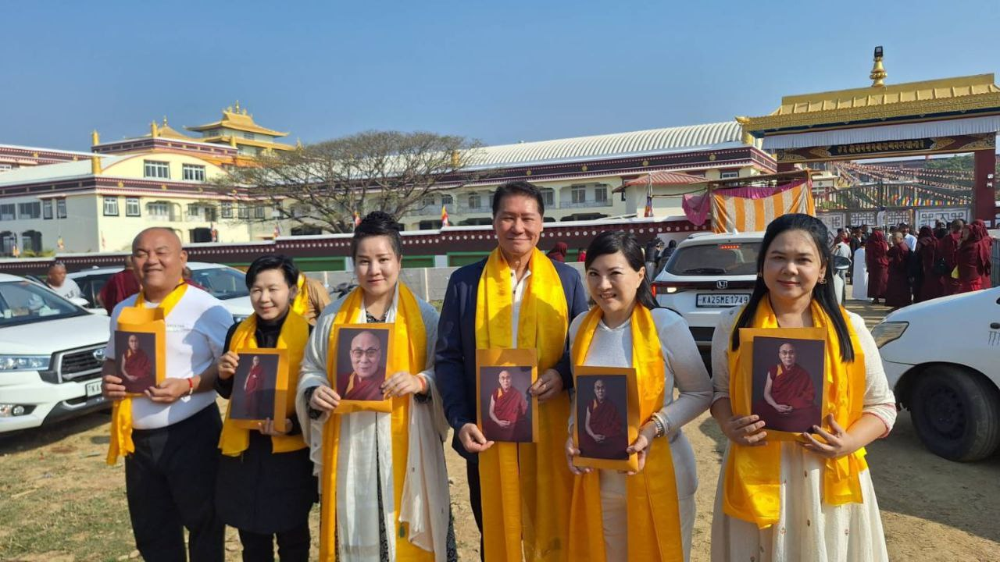
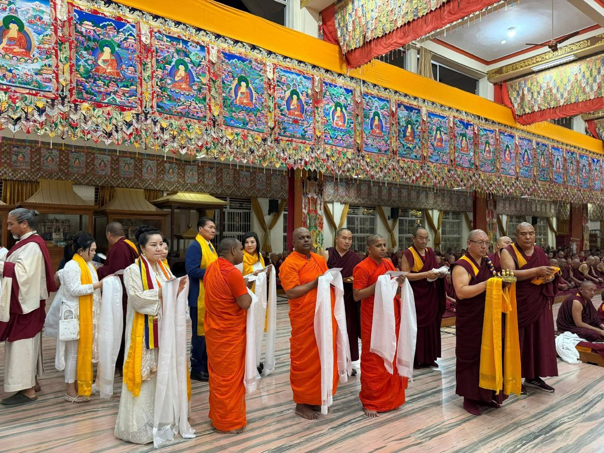
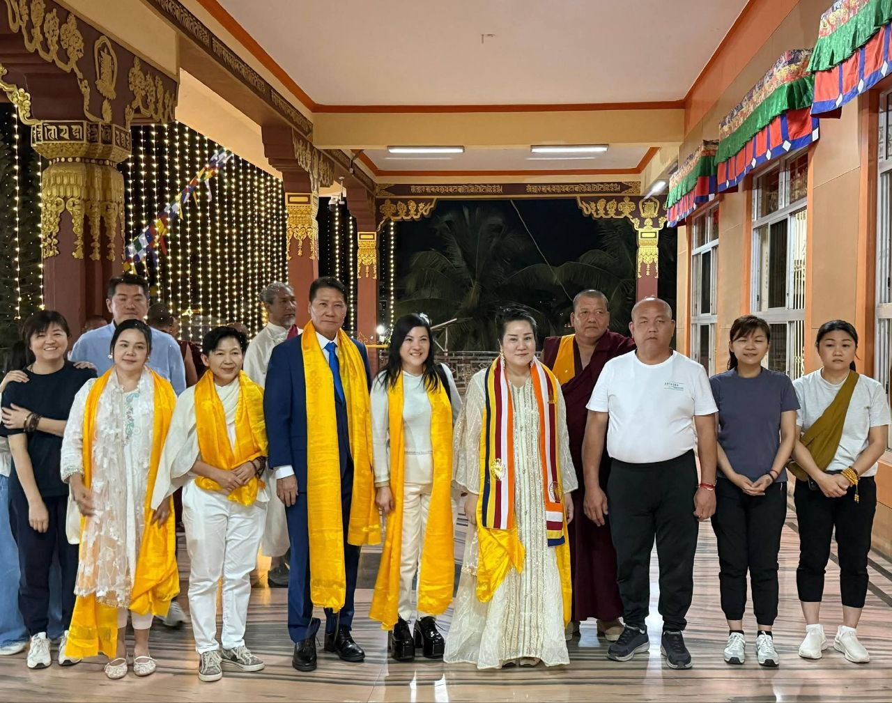
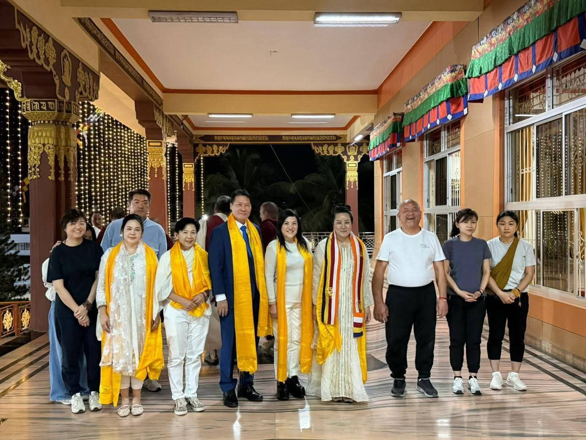

In Honor of SHEKINAIH SIEW SIN YAP

In Honor of J AARON K DAVID
January 2026
Doeguling Tibetan Settlement · Mundgod · Karnataka · India
"A Sacred Moment of Blessings and Compassion"
SHEKINAIH SIEW SIN YAP and J AARON K DAVID were received in a personal honorable audience by His Holiness the 14th Dalai Lama, Tenzin Gyatso, at Gaden Jangtse College, Doeguling Tibetan Settlement, Mundgod District, Karnataka — during His Holiness' seven-week stay in South India and on the day of his consecration of the College's new classroom building, the statues of Jé Tsongkhapa, and the new library.
In Honor of SHEKINAIH SIEW SIN YAP
In Honor of J AARON K DAVID
From the Commemorative Citation
"An Honorable Audience with His Holiness the Dalai Lama —
A Sacred Moment of Blessings and Compassion."
Gaden Jangste Norling College · Mundgod District · India
At a Glance · The Audience at Gaden Jangtse
The Audience
His Holiness
The 14th Dalai Lama · Tenzin Gyatso
The Setting
Gaden Jangtse
Doeguling Settlement · Mundgod, Karnataka
The Date
21 January 2026
Day of Consecration · Long Life Prayer
The Citation
A Sacred Moment
Of Blessings and Compassion
For SHEKINAIH SIEW SIN YAP and J AARON K DAVID, the road to Mundgod began long before they boarded the flight from Southeast Asia. Their paths through humanitarian leadership and faith ministry had already brought them into the wider UNPKFC peace network — and on 12 December 2025, His Holiness the 14th Dalai Lama, Tenzin Gyatso, arrived at the Doeguling Tibetan Settlement in Mundgod, Karnataka, after departing Dharamshala the previous morning. His Holiness' seven-week stay at the settlement — the largest of the Tibetan settlements-in-exile in India, where the great Gelug monasteries of Ganden and Drepung were re-established after 1969 under his guidance — would open the very window through which SHEKINAIH and AARON received their invitation.
On Wednesday, 21 January 2026, while SHEKINAIH SIEW SIN YAP and J AARON K DAVID waited at the Ganden Monastery campus alongside the senior dignitaries gathered for the day's ceremonies, His Holiness left Drepung Gomang Monastery for the short drive across the settlement. His first stop was at Gaden Jangtse College, where he had been requested to consecrate a new classroom building, the statues of Jé Tsongkhapa, and a new library. On the same day, the Tibetan community of Mundgod offered him a Long Life Prayer — and the international guests including SHEKINAIH and AARON were among those received in audience.
It was in this setting — on this exact day, on this exact campus — that SHEKINAIH SIEW SIN YAP and J AARON K DAVID were received in personal audience by His Holiness, alongside the senior monastic dignitaries of the Gelug order. The audience was subsequently commemorated in the formal printed citations issued by the Gaden Jangste Norling College of Buddhist Cultural and Welfare Association — the certifying lay foundation of Gaden Jangtse College — naming each of them by name and inscribing the audience as "A Sacred Moment of Blessings and Compassion."
"His Holiness left Drepung Gomang Monastery for the short drive to the Ganden Monastery campus, where his first stop was at Jangtse College..."
Bureau of His Holiness the Dalai Lama · 21 January 2026The Gaden Jangste Norling College of Buddhist Cultural and Welfare Association — the college's lay foundation — issued two formal commemorative citations to mark the audience: one in honour of SHEKINAIH SIEW SIN YAP, the other in honour of J AARON K DAVID. Both citations carry the same opening title: "An Honorable Audience with His Holiness the Dalai Lama."

Outside the Gates
Outside the gates of Ganden Monastery, beneath the golden stupa-roof of the temple, SHEKINAIH SIEW SIN YAP and J AARON K DAVID stood among the international delegation invited for the day's ceremonies. Each wore the yellow ceremonial khata — the silk scarf reserved in Tibetan tradition for occasions of particular sanctity — and each carried the official commemorative portrait of His Holiness.
The setting itself — Mundgod, Karnataka, on this exact day — placed SHEKINAIH and AARON at one of the most carefully prepared gatherings on His Holiness' South Indian itinerary of 2025–2026.

A Closer Frame
The closer frame captures the two of them in the same yellow silk, the same official portraits in hand. Behind them, the monastery's maroon-robed monks pass; behind them, the golden roofline of the temple itself. SHEKINAIH SIEW SIN YAP and J AARON K DAVID stand as the unmistakable international laity invited into the heart of the day's observance.
In the days that followed, the formal ceremonies of welcome and offering continued inside the great prayer halls of the Tibetan settlement. The walls of the halls were lined with the thangkas of the lineage masters — the hand-painted scrolls that map the entire Gelug spiritual genealogy. Between those walls, SHEKINAIH SIEW SIN YAP and J AARON K DAVID stood in the formal offering lines, robed monastics on either side.

The Offering Line
Inside the great prayer hall — its walls covered floor to vaulted ceiling with the thangkas of the lineage — SHEKINAIH SIEW SIN YAP and J AARON K DAVID stood in the formal offering line, each holding a folded white khata across both open palms in the traditional gesture of the lay devotee.
Beside SHEKINAIH and AARON, in the same line, the senior monastics of multiple Buddhist traditions — Theravada saffron and Vajrayana maroon together — held their own khatas in identical offering. It is the line that comes only to those formally invited as honoured guests of the host institution — a register SHEKINAIH SIEW SIN YAP and J AARON K DAVID were placed into.

After Dusk
After dusk, the temple grounds were illuminated for the evening observance. SHEKINAIH SIEW SIN YAP and J AARON K DAVID stood with their fellow delegates in the customary añjali mudrā — both palms joined in the gesture of devotion — before the lit façade of the temple.
For two careers built upon faith, leadership, and humanitarian service, no audience can carry more spiritual weight than the audience of His Holiness the 14th Dalai Lama. SHEKINAIH SIEW SIN YAP and J AARON K DAVID received it on the same day, at the same campus, with their names inscribed in the same formal citation — preserved henceforth as a permanent record of blessings and compassion.
Mundgod · Karnataka · January 2026All twelve photographs from the audience and its surrounding ceremonies. Tap any image to view it full size. Use the arrow keys or buttons to navigate.
In Honor of SHEKINAIH SIEW SIN YAP
In Honor of J AARON K DAVID
The Delegation · Ganden Gate

AARON · At the Gate
The Pair · Beneath the Golden Roof

With Co-Delegate

The Six · At Ganden

The Offering Line
The Khata Offering
Before the Illuminated Temple

On the Veranda · Evening

The Formal Delegation
Institutions Present · Mundgod · January 2026